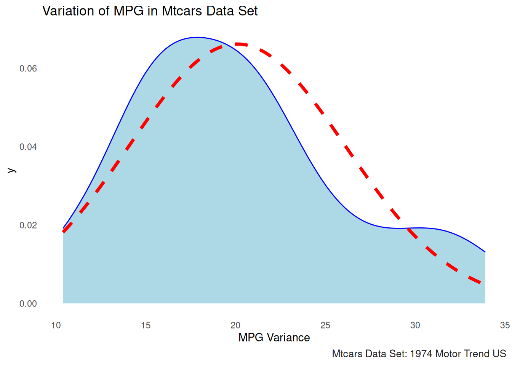

As you begin your journey through statistics there are several
underlying foundational concepts that need to be understood. The
following sections explain these concepts and allow you to demonstrate
them utilize R coding practices. Additionally you will be
able to visualize the concepts to help gain a better understanding of
what they mean and how the concepts can be applied.
| Characteristic of Scale | Nominal | Ordinal | Interval | Ratio |
|---|---|---|---|---|
| Applies names or numbers to categories? | Yes | Yes | Yes | Yes |
| Orders categories according to quantity? | Yes | Yes | Yes | |
| Displays equal intervals between consecutive numbers? | Yes | Yes | ||
| Diplays a “true zero point?” | Yes | |||
| Note: These scales define how data can be categorized, ordered, and measured. Citation: Hatcher, L. (2013). Advanced Statistics for Data Analysis. | ||||
The mean or average and sometimes referred to as the arithmeic mean (Hatcher 2013)
We take the sum \(\sum\) of all the scores \(X\) in a column and then divide them by the total number of scores or \(N\)
Assumptions to calculate the mean:
The formula for the mean is as follows:
\[ \overline{X}=\frac{\sum{X}}{N} \]
According to Hatcher(2013) the median is the score at which 50% of the distribution falls at or below a particular score in the distribution.
One way to calculate the median is to order the values in the data and order them from largest to smallest. The middle most number is the \(median\).
If you have an even number of data points. You will want to order the data again from largest to smallest and then take the middle two numbers from your data and divide them by \(2\).
You can also utilize the median() function in
R
## [1] 19.2Assumptions to calculate the median:
ordinal scaleinterval or
ratio scaleThe mode is the most frequently occurring number in a distribution.
There are two types of modes unimodal and
bimodal.
\(unimodal\) - there is only one mode present in a distribution.
\(bimodal\) - there are two modes present in a distribution.
Assumptions to calculate the mode:
Below is an R function to calculate the
mode in a data set. R does not have any built
in functions that will calculate the mode for us.
# Create the function.
getmode <- function(v) {
uniqv <- unique(v)
uniqv[which.max(tabulate(match(v, uniqv)))]
}
getmode(mtcars$cyl)## [1] 8Histogram showing the mode of the number of
cyl/cylinders in the Mtcars data set. Here we can see that
the mode is 14 and belongs to the 8 cylinders category.
Since the cyl variable is a discrete variable, can only
assume a whole-number then we can utilize it in our histogram.
# hist(mtcars$cyl)
# Create histogram for 'cyl' column
hist_obj <- hist(mtcars$cyl,
main = "Histogram of Number of Cylinders (cyl)",
xlab = "Number of Cylinders",
ylab = "Frequency",
col = "lightblue",
border = "black",
plot = FALSE) # Don't plot the histogram yet, just store the data
# Plot the histogram
plot(hist_obj,
main = "Histogram of Number of Cylinders (cyl)",
xlab = "Number of Cylinders",
ylab = "Frequency",
col = "lightblue",
border = "black")
# Add counts on top of each bar
text(x = hist_obj$mids,
y = hist_obj$counts,
labels = hist_obj$counts,
pos = 1.5, # Position text above the bars
col = "black", # Color of the text
cex = 0.8) # Size of the textQuartiles is when our data is able to be split into 4
equal parts or 25% each. This in turn gives us
4 sections of our data. One way to look at
variability/spread of the data is to look at the \(IQR\) or the interquartile range. This can
give us a sense of how spread out our data is and if it meets certain
assumptions e.g. \(homogeneity\) -
equal variance or \(heterogeneity\) -
unequal variance.
The symbols used for quartiles are as follows.
\[Q1\;=\;First\;Quartile\\ Q2\;=Second\;Quartile\\ Q3\;=Third\;Quartile\\ Q4\;=Fourth\;Quartile \]
We can easily compute the quartiles in R
using the quantile function.
## 0% 25% 50% 75% 100%
## 10.400 15.425 19.200 22.800 33.900Utilizing the information from above we can easily compute the interquartile range or \(IQR\) of our data as follows.
\(IQR\;=\;Q_{3}-Q_{1}\)
In our data above the \(IQR\) is
calculated as \(Q_{3}\)75%
- \(Q_{1}\)25% or 7.375.
Similarly we can also utilize the IQR() function in
R to calculate the interquartile range.
## [1] 7.375\(Measure\;of\;variability\) - indicates the amount of dispersion displayed by a set of scores. (Hatcher 2013)
Variance can be calculated via the following formula(s) depending on if we are looking at the following:
The formula for calculating the \(Sample\) variance is as follows:
\[ S^2\;=\;\frac{\sum(X_{i}\;-\;{\overline{X}})^2}{N\;-1} \]
The variance of MPG in the Mtcars data set is 36.3241028
You can also utilize the var() function in R to
calculate the variance.
## [1] 36.3241One way to look at the variance without needing to calculate it is by utilizing a boxplot or a histogram.
# Boxplot of mpg in mtcars
ggplot(mtcars, aes(x = "", y = mpg)) +
geom_boxplot(fill = "lightblue", color = "blue") +
labs(title = "Variation of MPG in mtcars", y = "Miles Per Gallon (MPG)", x = "MPG Variation") +
theme_minimal()+gonzo_theme()The boxplot for MPG in the mtcars data set visualizes the variation in fuel efficiency across different cars. Here’s what we can interpret from the boxplot:
Median (Center Line): The thick horizontal line in the middle of the box represents the median value of MPG, which is the middle value when all the MPG values are ordered from smallest to largest. This gives us a sense of the “central tendency” or typical value for MPG in this dataset.
Interquartile Range (IQR): The box represents the interquartile range (IQR), which includes the middle 50% of the data. The top and bottom edges of the box represent the third quartile (Q3) and first quartile (Q1), respectively. This range gives us an idea of the spread of the central half of the data.
Whiskers: The lines extending from the box (called whiskers) show the range of values within 1.5 times the IQR from the quartiles. These lines help to visualize the spread of data, excluding outliers.
Outliers: Points that fall outside of the whiskers (typically shown as individual dots) are considered outliers. These are values that are significantly different from the rest of the data. For example, the MPG values for cars with extreme fuel efficiency or inefficiency could appear as outliers in this plot.
One way to display the distribution or variance of the data is by
utilizing a histogram. The histogram takes the numerical
values and bins them. Below you can see we have the
frequencies of the mpg data on the horizontal
axis (X axis). On the vertical (Y axis) we have the frequencies of the
data. This allows us to easily see:
*Note: SPSS, R, and SAS can produce very different histograms due to
how they bin the data set`
# Density plot to visualize the spread (variance) of mpg
# plot(density(mtcars$mpg),
# main = "Density Plot of mpg (Variance)",
# xlab = "Miles per Gallon",
# col = "darkblue",
# lwd = 2)
ggplot(mtcars, aes(x = mpg)) +
geom_density(fill = "lightblue", color = "blue") +
stat_function(fun = dnorm, args = list(mean = mean(mtcars$mpg), sd = sd(mtcars$mpg)),
color = "red", linetype = "dashed", size = 1.5) +
labs(title = "Variation of MPG in Mtcars Data Set", x = "MPG Variance") +
theme_minimal()+gonzo_theme()